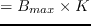

Next: Development of generalised GPU Up: Greedy: Avenues of parallelisation Previous: Greedy: Avenues of parallelisation Contents
In the former case, the style of Figure 35 would be adopted, where each kernel invocation could iteratively perform optimisation on each particular channel. The difficulty is that this algorithm could not really be parallelised any further due to the incremental nature of ISB. It is possible that this could be split up by each user attempting their own bit-load permutation individually, with a record of 'best' bit-load shared between threads in a block, but this is a fundamental break in the ISB algorithm, so would not be guaranteed to be either near-optimal, or even converge at all.
The second option appears to be the most viable, if (at first glance) less applicable to multiple devices. Using an iteration construct like Figure 36, each thread-block could perform each channel's line-loop optimisation. This would only involve a constantly defined loop within the CUDA kernel, which is significantly more performant than a non-deterministic convergence condition as would be required in the former case. In short, this structure would perform channel and permutation parallelism, with each block containing 163.17 threads. While this is not a huge number of threads, it's enough to sufficiently occupy the device. Additionally, CUDA's shared memory space can be used such that at each loop, a block-shared store of the running-bit-load would be updated on each per-line optimisation, containing the bit-permutation with the highest Lagrangian. With 224 ADSL channels, there is no reasonable condition under which this would require more than one device ( Number of Threads), but if desired, the channel range could be partitioned across devices.
While the first option will be explored, but the second will be the focus of most development time.
Andrew Bolster 2011-05-22